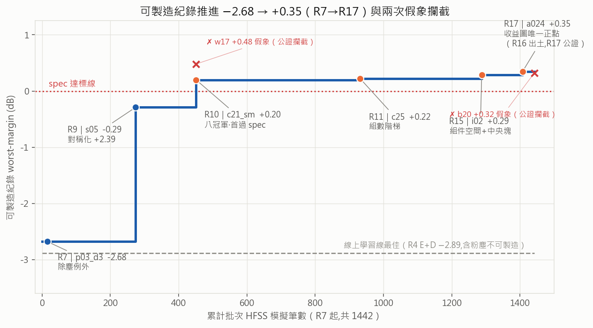
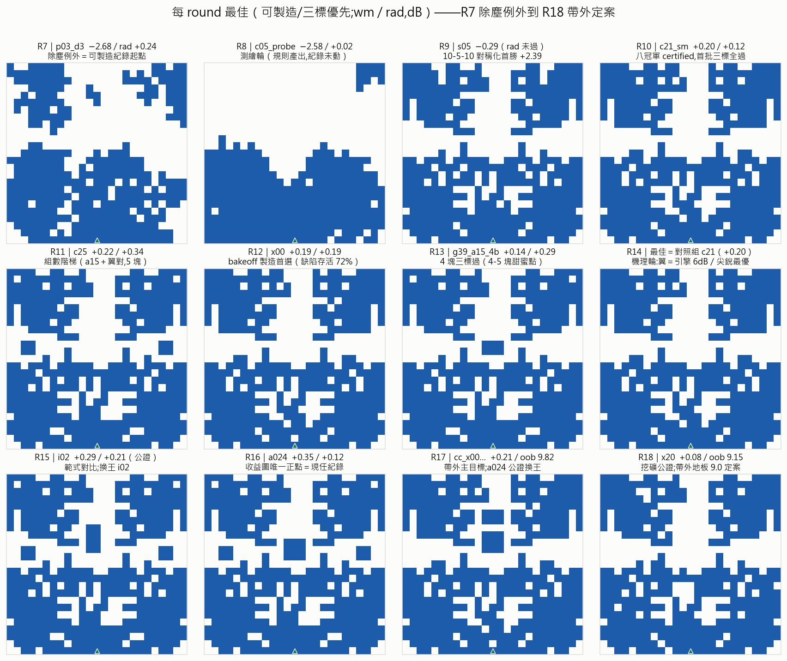
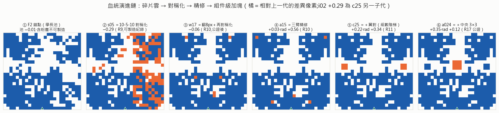
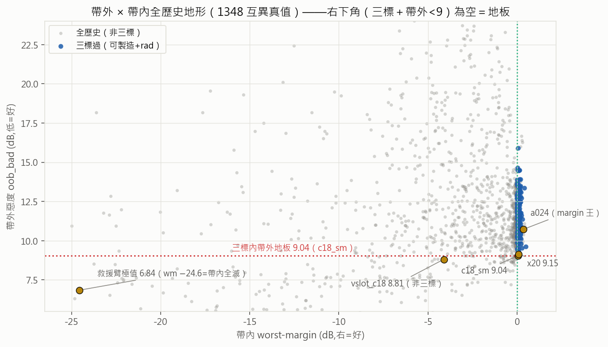
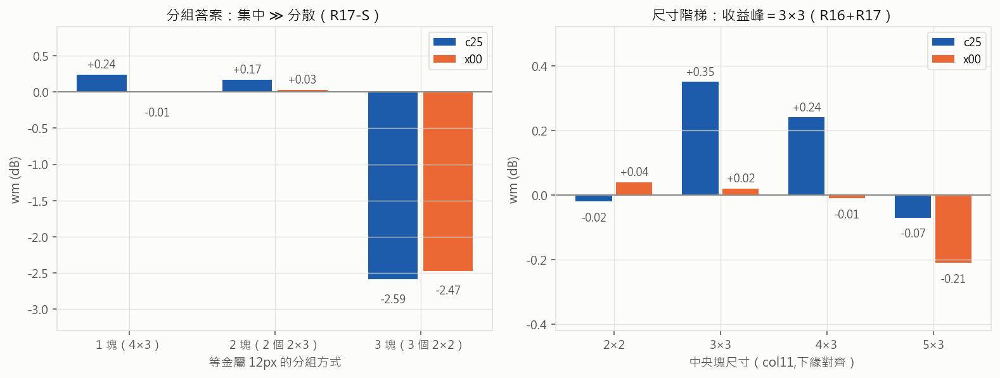
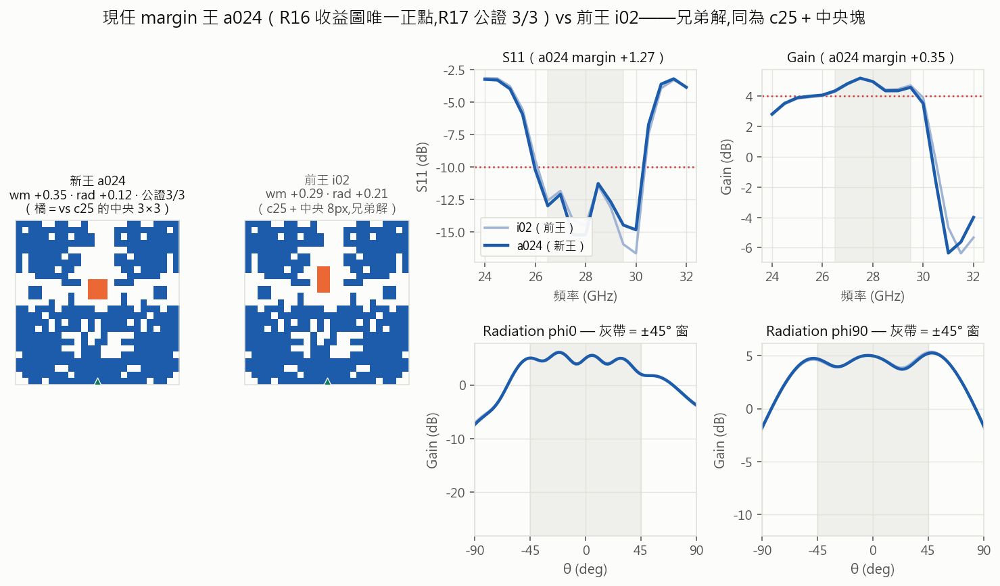

鄒穎麒 ｜ 2026-07-09 ｜ 資料截止：R18 收檔（帶外戰役定案；R1–R18 全數歸檔）
本篇是 R1–R18 的總覽版：以「每 round 的最佳 pattern」串出演進主線，重點在 R11–R18（R1–R10 細節見
progress-r1-r10.pdf，R11–R14 分數詳表見 progress-r11-r14.pdf，本篇不重複）。
邊界照舊：全部結論在現行 HFSS 模擬設定內（模擬 ≠ 量測，x00 為送測首選）；單一 spec
（26.5–29.5 GHz，S11≤−10／Gain≥+4／rad ±45°／可製造）；冠軍全數 w17 家族（其特殊性已被 R12 實驗證明，
非搜尋疏漏）。凡標「單次」即未經公證，不作紀錄宣稱。
▍一句話總結：十八輪把一個問題從「怎麼跑訓練」推進到「怎麼設計天線」——可製造紀錄 −2.68 → +0.35（1442 筆批次 HFSS）、三標解累計 180+、帶外地板 9.0 定案（低側雙判死）、 設計語言完成參數化（底座＋雙雲＋中央塊；集中 ≫ 分散、尺寸峰 3×3）、 量測誠信體系兩度攔截假象（w17 +0.48、b20 +0.32）。下一棒：模型線（SM v5＋GA，觸發已成立）。
| 格 | R10 收檔 | R14 收檔 | R18 收檔（現況） |
|---|---|---|---|
| 產品：可製造紀錄 | +0.20（c21） | +0.22（c25）；製造首選 x00（72%） | +0.35（a024，公證 3/3）；帶外榜 9.04–9.54 四筆公證 |
| 能力：量測/搜尋 | SM 作戰區 0.36dB | 組件級算子庫 | 手術算子庫（slot/cut）＋查重制度＋帶外拆側儀表；SM v4 oob 排序 ρ+0.31 |
| 知識：機理 | 規則 10 條 | 張力機理（翼）＋組件語言 | 帶外地板 9.0＋低側雙判死＋分組/尺寸定律＋hslot=rad 旋鈕＋配對正交互 |

圖 1：可製造紀錄七步推進 −2.68 → +0.35。兩個紅 ✗ 是被公證制度攔下的假象（單次高值重測不成立）—— 紀錄曲線上每一個點都是重複量測過的。灰虛線是線上學習線五輪的天花板（−2.89，含粉塵不可製造）， 兩範式的效率差是 R1–R10 報告的主線，本篇不再展開。

圖 2：R7–R18 每輪最佳（可製造/三標優先）。可以直接看到演進的三個階段： 碎片雲期（R7–R8：整塊底座＋雜亂上雲，margin 深負）→ 對稱化期（R9–R10：10-5-10 對稱先驗進場， 外形收斂成「下底座＋上雙雲」，margin 進入 ±0.3）→ 組件微雕期（R11–R18：外形幾乎不再變， 變化全在中央帶小塊與幾個像素——margin 從 +0.20 推到 +0.35，帶外/rad/穩健各自立榜）。 「後期圖看起來都一樣」是空間的真實形狀：R12 已證 w17 家族是 24k 池內唯一可製造達標區， 且視覺相似 ≠ 電磁相似（x00 與 c21 差 2px，缺陷存活率 72% vs 28%）。

圖 3：現任 margin 王 a024 的完整血統（橘＝相對上一代的差異像素）。六步、每步都是一個 round 的產物： 學長池撈出 F2 碎片雲 → 對稱化救援（R9 破紀錄）→ 翻 8px 再對稱化（R10）→ 三臂精修（R10 八冠軍）→ 加翼對（R11 組數階梯，使用者提議）→ 加中央 3×3（R16 添加收益圖的唯一正點）。 前三步是「找形」，後三步是「組件級加法」——這條鏈本身就是方法論的演進史。
| Round | 主題 | 該輪最佳 / 關鍵數字 | 一句話結論 |
|---|---|---|---|
| R1 | 線上線：訓練量 | — | 訓練量加倍非瓶頸 |
| R2 | 快照/回滾治本 | — | 治本微幅，瓶頸在 SM |
| R3 | 三臂隔離 | — | SM 欠訓確診（gap 3–4.5dB） |
| R4 | 自適應 SM | E+D −2.89（線上紀錄） | 破紀錄靠探索躍遷；探測自鎖 |
| R5 | 滑動視窗訓練量 | E 臂 gap 1.24（史上最低） | 訓練量修好了，泛化到頂 |
| R6 | 期望邊界（離線） | 期望爬升 −9.18+0.75·ln k | 到不了 spec；oracle 已在池內＝分布≫策略 |
| R7 | 除塵驗證 | p03_d3 −2.68（可製造起點） | 粉塵＝共振一部分（4/5 崩）；乾淨解要構造不能修 |
| R8 | 乾淨子空間測繪 | c05_probe −2.58 | A崩/B敗/C半亮/D實錘：random 輸池抽樣 5dB |
| R9 | 池頂重驗＋對稱化 | s05 −0.29（+2.39） | 10-5-10 對稱化首勝；家族普查 |
| R10 | 精修攻堅 | c21_sm +0.20（八冠軍） | 首批三標全過；w17 +0.48 假象→公證鐵則誕生 |
| R11 | 公差×規則普適 | c25 +0.22（組數階梯） | 底排承重跨家族 ρ+0.53–0.72；整面蝕刻全滅 |
| R12 | 收斂×破單一化 | x00 缺陷存活 72%（製造首選） | crown 零假象；family2 全敗＝w17 特殊性 |
| R13 | 組數階梯 | g39_a15_4b +0.14（4 塊） | 4–5 塊甜蜜點；6 塊遞減（後被 R15 部分翻案） |
| R14 | 組件級軸（消融/縮放） | 最佳＝對照組 | 翼＝帶內引擎 6dB 兼 rad/帶外殺手；尖銳最優；像素級退役 |
| R15 | push-button vs 工具箱 | i02 +0.29（換王,公證） | GA 至少打平＝空間即知識載體；g14 +0.40 帶內紀錄（rad 未過） |
| R16 | 添加收益圖 | a024 +0.35（出土） | 單塊近全負（空間飽和）；唯一正點 r9c11×3×3；配對正交互；g14 rad 兇手＝g3 |
| R17 | 帶外主目標一批 | cc_x00 +0.21/oob 9.82；a024 公證換王 | 低側物理可動（hslot）但買不起＝張力；分組=集中≫分散；hslot=rad 旋鈕 +1.7 |
| R18 | 帶外二批（挖礦落地） | x20 +0.08/oob 9.15（公證） | 低側救援 0/20＝粉塵本體定案；b20 假象攔截；帶外地板 9.0 定案 |
線上學習線（R1–R5）是一部診斷史：五輪各修一個瓶頸（訓練量→回滾→欠訓確診→自適應→滑動視窗）， 把 SM 從「系統性低估 3–4.5dB」修到「gap 1.24」，但 best-wm 天花板停在 −2.89 且含粉塵。 它的遺產不是紀錄，是工具：SM 代理、ACP 排程、誠實的失敗歸因——以及「範式該換」的證據。
批次假設迴圈（R6 起）接棒：R6 用學長 rollout 算出「期望爬升到不了 spec、oracle 已在池內」＝ 分布 ≫ 策略，於是把 HFSS 預算從「訓練」改投「假設驗證」——每輪一個假設、判準發車前寫死、 紀錄級一律重複量測。十二輪 1442 筆模擬的效率全表看圖 1。
四輪回答四個工程問題：扛不扛得住製造誤差（R11/R12 bakeoff：整面蝕刻全滅＝margin 要吃公差； 局部缺陷存活＝margin×位置；margin 相近時穩健性才是製造判準——x00 72% 對 c21 28%，兩者只差 2px）、 規則是不是普適（R11 occl2：底排承重跨家族 ρ+0.53–0.72）、這家族是不是唯一（R12 family2： 非 w17 家族深掘全敗＝特殊性確立）、pattern 由什麼組成（R13/R14：組數 4–5 塊甜蜜； 翼＝帶內引擎 6dB、同時付 rad＋帶外＝三標張力的物理載體；冠軍在尖銳最優點上，±1 圈是懸崖）。 R14 收檔時像素級操作正式退役，設計語言轉為組件參數化。
R15 是方法論的對照實驗：同一個組件空間裡，push-button GA（全 SM fitness 盲搜）對上知情分層對上 空間隨機，同額 HFSS 預算。判決：GA 至少打平（三標過數還贏），知情挑選 ≈ 隨機—— 正確結論是「空間即知識載體」：R7–R14 的知識已經燒進空間定義（錨點=冠軍/尺寸=甜蜜點/對稱化）， 之後盲搜就夠。工具箱的價值在建構空間，不在最後挑選。副產品：換王 i02（+0.29 公證）、 g14 +0.40 帶內紀錄（rad −0.39 未過＝三標張力的實測上界）。
R16 補上被 R15 戳破的知識缺口（移除成本圖 ≠ 添加收益圖）：四錨點單塊全掃的結果是 收益圖近全負＝空間已飽和，唯一正點是「r9c11 × 3×3」——同一位置 2×2 是負的， 位置×尺寸交互極強（使用者對 2×2 探針的質疑被數據證實）。更重要的是配對正交互： 兩個各自為負的塊放在一起可以翻正（c07 +0.25 > 錨點 +0.19）——加塊優化不能貪心，組合有紅利。 塊歸因鎖定 g14 的 rad 兇手＝g3（移除即三標過）。a024 在本輪出土。
背景：使用者定調「帶外當主目標探索幾輪」。拆側儀表（lo/hi 分側追蹤）先破案——
低側（24–25.5 GHz）是全家族鎖死的地板（Gain 3.3–4.0、滾降 ≈0.3，單側貢獻 ≈9.2），
高側旋鈕（中央塊）其實早已在手，只是被 oob_bad=max(兩側) 遮住。兩輪 79 筆分頭進攻：

圖 4：1348 筆互異真值的帶外×帶內全地形。右下角（帶內達標且帶外 <9）是空的——這就是「地板」的 視覺定義；左下角的救援臂樣本證明帶外 6.84 存在、但代價是帶內全滅。三標內紀錄由 c18_sm 9.04 持旗 （跨店雙響應公證），x20 9.15、vb43 9.24、vpd2 9.54 本輪公證入榜。

圖 5：R17-S 臂順帶回答了使用者的分組問題：等金屬 12px，集中一大塊（+0.24）≫ 拆兩塊（+0.17）≫ 拆三小塊（−2.59，災難級）；中央塊尺寸峰在 3×3（+0.35），大了單調衰減。 中央帶金屬要集中、要 3×3——這兩條直接進 generator 先驗。
| 頭銜 | id | 數字 | 出身 |
|---|---|---|---|
| 👑 margin 王 | a024 | +0.35／rad +0.12／oob 10.72（3/3） | R16 收益圖唯一正點 |
| 🏭 製造首選 | x00 | +0.19／+0.19（缺陷存活 72%） | R11 wide；R12 bakeoff 定案 |
| 🌊 帶外王 | c18_sm | oob 9.04（+0.07／+0.32） | R10 SM 導引；跨店雙響應 |
| 📡 rad 王 | a15_k4 | rad +0.56（+0.03） | R10 盲掃 |
| ⚖ 平衡王 | g16 | +0.21／rad +0.49 | R15 GA 臂 |
| 🎯 帶內紀錄 | g14 | +0.40（rad −0.39＝非三標） | R15；rad 兇手已鎖定（g3） |
另有三筆單次紀錄級待公證（R19 搭載）：cc_c25_r6s2_r9s3 wm +0.36（rad −0.22）、 cc_x00_r5s2_r8s3 +0.21/oob 9.82（三標內帶外次佳平衡）、cc_c25_r6s2_r9s2 rad +0.62（rad 王挑戰者）。

圖 6：新王 a024 對前王 i02——兄弟解（同為 c25 子代），差別只在中央塊的形狀（3×3 對 2×4）， margin +0.35 對 +0.29。中央帶幾個像素的形狀差 0.06dB margin＝這個空間後期優化的解析度。
使用者預註冊的觸發條件（R17/R18 收檔判死低側）已命中。路線： ① SM v5 重錨——CLEAN_STORES 補進 R17/R18 全部 79 筆（低側 Pareto 全譜＝模型最缺的新區域覆蓋）， held-out 專驗新區域的 oob/lo 排序；② rad head 盤點——張力拓撲是 (wm＋低側)↔rad， 模型線最缺的是 rad 預測器；③ GA over 組件-算子空間（非像素）——基因＝錨點×算子序列， fitness＝字典序（wm/rad 硬約束＋帶外目標），R15 的 GA 架子直接改。 理由：R16 的配對正交互證明這個空間的非線性耦合正是手工先驗抓不到、模型抓得到的部分。
製圖：script/figs/report_r1r18.py（決定性可重跑）；數字全數對 docs/log/round-*.md 與公證紀錄核對。
本篇 PDF 由 docs/report/build_pdf.py progress-r1-r18 產生。